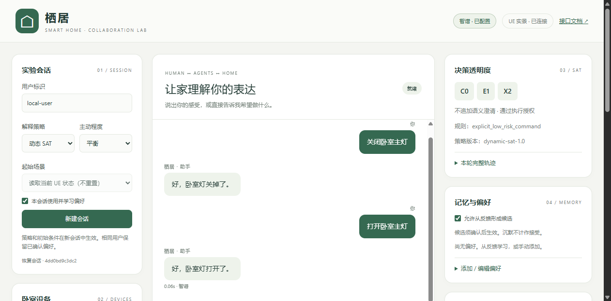

Master's thesis · Working prototype
Adaptive User Modeling for Uncertain Interaction
A closed-loop personal-agent testbed for examining how interaction feedback and prior preferences can inform later decisions to act, explain, clarify, offer alternatives, or return control.
- Period
- 2026–present
- Role
- Independent researcher and developer
- Setting
- UE5 smart-environment simulation
- Status
- Technical validation complete; user study in preparation

Research question
How can a personal agent use interaction history to adapt its behavior while keeping its interpretations visible, revisable, and under user control?
Motivation
Personal agents frequently act on incomplete requests. A response suitable for one person or situation may be intrusive or unhelpful for another. This project studies adaptation as an interaction problem rather than only a prediction problem.
System logic
- Represent plausible intent candidates from the request and environment state.
- Use contextual information and stored preferences to inform the response decision.
- Treat action, explanation, clarification, alternatives, and control return as distinct strategies.
- Record acceptance, rejection, explanation requests, and corrections as feedback.
- Update the individual preference profile for later interactions.
Current contribution
The prototype operationalizes a complete interaction loop rather than a single-turn interface. It provides a testbed for studying when personalization is useful, when an agent should remain cautious, and how users can inspect or revise what the system has learned.
Next study
A formal user study is being prepared to evaluate whether adaptive explanation decisions improve perceived understanding and appropriateness without reducing users’ sense of control.